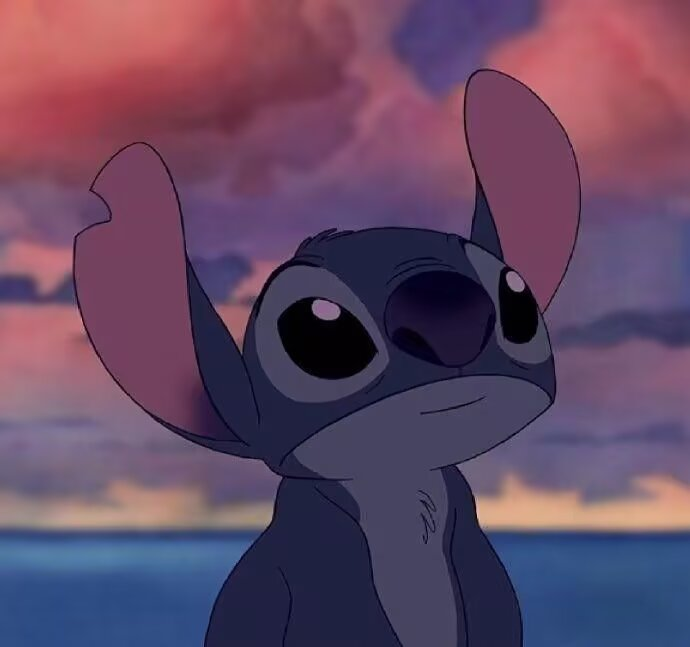

ABOUT THE CREATOR
Member · Team Introduction
岑安乾
团队负责人 / 游戏开发
Ciallo~(∠・ω< )⌒★ \n 我是岑安乾，计科牛马中的牛马。喜好足球，乒乓球，热爱fps游戏。现在是acmer&&aier。欢迎关注我的微信公众号这是某某
- 负责内容
- 团队主要工作，登录注册页面、网页交互与前端实现
- 某某
- 不要紧，山野都有雾灯

ABOUT THE CREATOR
Member · Team Introduction
Ciallo~(∠・ω< )⌒★ \n 我是岑安乾，计科牛马中的牛马。喜好足球，乒乓球，热爱fps游戏。现在是acmer&&aier。欢迎关注我的微信公众号这是某某